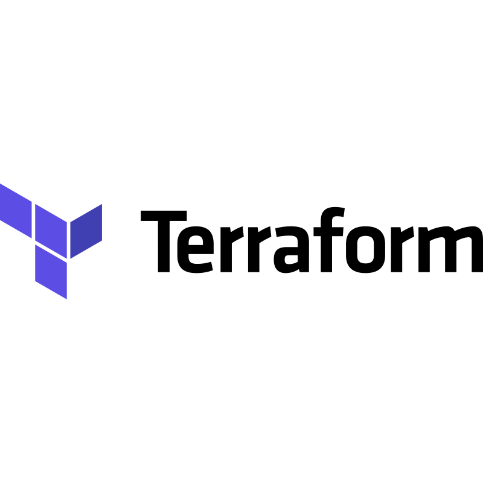
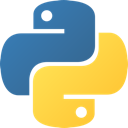
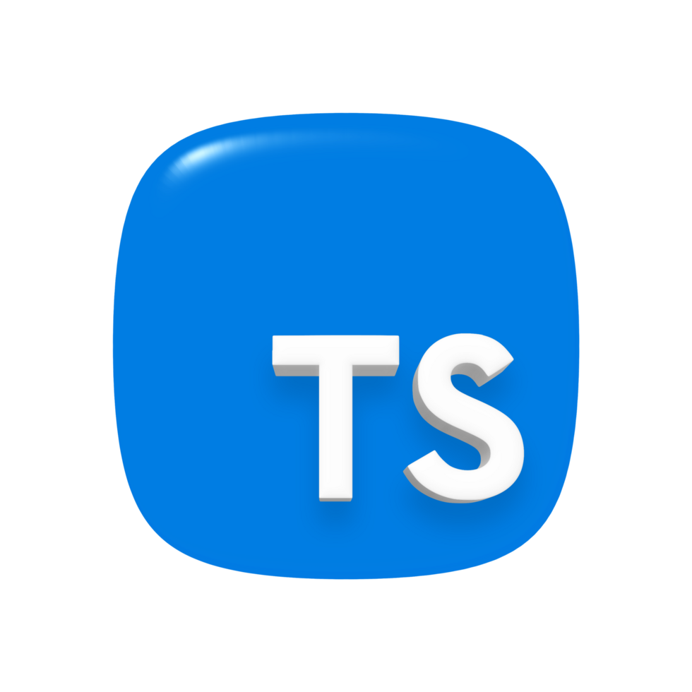
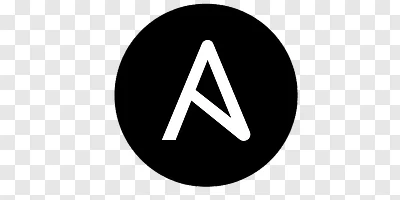
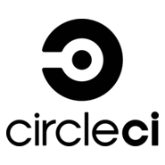
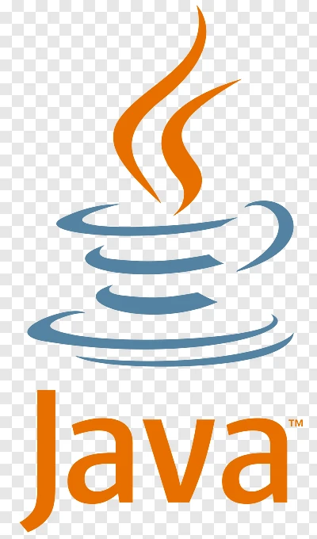

Hi, I’m Prateek
DevOps engineer at Zeus Labs with 4+ years shipping AWS platforms, GPU automation, and observability — plus an MSc in Software Engineering from Cardiff University.
DevOps Engineer · Zeus Labs, London
Building resilient infrastructure with cloud & code
DevOps engineer at Zeus Labs — AWS CDK, GPU platforms, and observability for systems that stay up when it matters.
// mission_signal
01 — Profile
Automation, cloud platforms, and delivery pipelines — with a bias for reliability.
DevOps engineer at Zeus Labs with 4+ years shipping AWS platforms, GPU automation, and observability — plus an MSc in Software Engineering from Cardiff University.






Based in London, UK — architecting multi-account AWS, event-driven GPU platforms, and AI-native observability for production logistics systems.
0
Years shipping DevOps systems
0
Warm GPU pool cold-start latency
0
Production Grafana dashboards
0
Baseline AWS spend reduction
02 — Timeline
Education and roles that shaped how I ship reliable systems.
Feb 2026 – Present Now
Zeus Labs · London, United Kingdom
2024 – 2025
Cardiff University
Jan 2022 – June 2024
SAP LABS, India
June 2021 – Dec 2021
Bigstep Technologies
2017 – 2021
Manipal University Jaipur
03 — Selected work
Selected work across CI/CD, cloud provisioning, and full-stack delivery.
Containerised Helical/scGPT pipeline orchestrated with Airflow, Docker, Prometheus, and Grafana — trigger a DAG, run the model, and watch metrics end to end.
Full-stack industrial project for CreditSafe with a Spring Boot backend, interactive frontend, and MariaDB for data management.
Deployed a Node.js app on an EC2 instance using Jenkins for CI, with automated deployment via webhooks and containers.
Integrated CircleCI with GitHub to automatically build, test, and deploy a Python application onto an EC2 machine.
Utilized Argo CD for continuous deployment on a Kubernetes cluster, pulling from a Docker image registry.
Provisioned a secure AWS infrastructure using Terraform to deploy an Apache website with a full CI/CD pipeline.
04 — Contact
Opportunity, project idea, or a chat about cloud and automation — send a note.